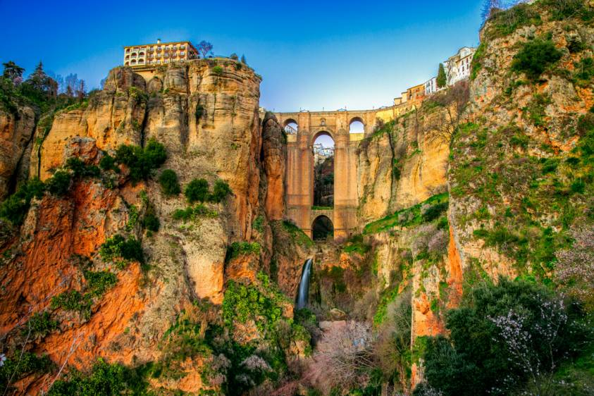

Welcome to Spain

Comunidades of Spain
Spain is composed of 17 autonomous regions, called comunidades autónomas. Click here to see the regions
The Beautiful City of Ronda

Welcome to Ronda, Málaga!
If you ever go to Spain, I 100% recommend that you make a detour to the little city of Ronda. Located 95 kilometres from Málaga and 428 kilometres from Madrid, this city of little more than 34.000 thousand inhabitants was my home for almost nine months! Ever since my departure, I still dream of the day of returning to the enchanted city and my stunning flat (I lived on the top floor of calle Rosario 1) overlooking the Plaza de España and the Puente Nuevo to the left. I am not the only one who fell in love with the city. Ernest Hemingway, Orson Welles, and Rainer Maria Rilke are examples of three famous artists who spent a considerable amount of time in the city. Still not interested in visiting the city? Well, did you know that the launch party for Gran Turismo 6 was held in Ronda in 2013?? The Gran Turismo crew had several of the playable vehicles for display on the Puente Nuevo and in the Plaza de España(right in front of my flat!!) and even dedicated a level to the city. For such a small city, it sure is international! So, the next time you are in Spain, please go check the city. Talk a stroll on the Calle de la Bola or go explore the Parque Alameda del Tajo.
{kind=link}
{kind=link}
{kind=link}